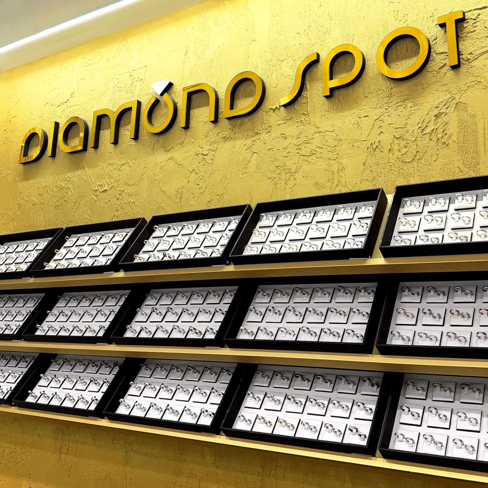
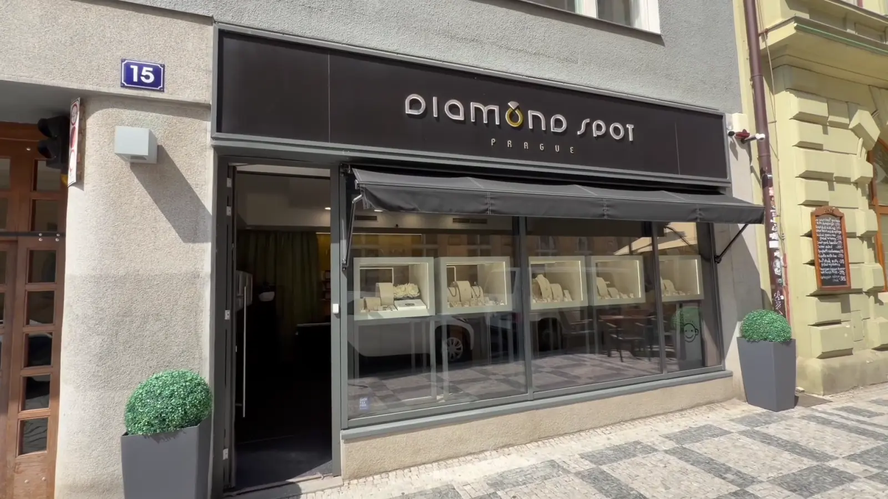

Obchod v Masné 15
Diamond Spot je rodinná značka. Stojí za ní manželé, profesionální gemolog a designérka šperků Daniela Komatović.
Galerie v Masné
Prostor navrhla sama Daniela jako místo s atmosférou pařížské galerie. Klenotnictví najdete v Masné ulici 15, ve funkcionalistickém domě od prvorepublikových architektů Otty a Karla Kohnů. Snubní prsteny si tu můžete vyzkoušet u šálku dobré kávy.
„Atmosféra byla příjemná, dostal jsem i kávu.“
Filip, recenze na Googlu

Výloha a vitríny
Kompletní certifikovanou kolekci si můžete prohlédnout v našem klenotnictví.

Gemolog
Diamanty vybírá na diamantových burzách v Izraeli a Belgii, barevné kameny přiváží přímo z Barmy, Kolumbie, Zambie, Srí Lanky, Thajska a Madagaskaru.
Profesionální lupou, mikroskopy, refraktometry a diamantovými váhami zkoumá strukturu kamenů a ověřuje, zda platí to, co bylo dříve stanoveno certifikátem.
Šperky zdobí výhradně přírodní kameny, inkluze se nevyplňují laserem. Kvalitu potvrzují certifikáty GIA, HRD, IGI, TGL, GRS a společnosti YUDC.

Jak šperk vzniká
Moderní technologie i ruční práce.
- Náčrt, podrobné studie a u složitějších modelů maketa.
- Technické nákresy a 3D tisk ve vrstvách tenkých 0,016 až 0,33 mm.
- Tavení a legování zlata: 14karátové Au585, exkluzivní kusy z 18karátového Au750.
- Odlévání, válcování, kování, pilování a letování.
- Zasazení kamenů, rytí diamantovou jehlou, nielo, rhodiování a granulace.
- Finální leštění a čištění.

Dárky
Certifikovaný drahokam
Diamant, smaragd, safír nebo rubín v dárkovém balení s ochranným hologramem, s certifikátem GIA, IGI, HRD, TGL nebo GRS. Ke každému blistru přikládáme voucher s 10% slevou, třeba na výrobu šperku s darovaným kamenem. Od 3 300 do 32 000 Kč.
Dárkový poukaz
V jakékoli hodnotě, platí až jeden rok. Ke svatbě, k narozeninám, k výročí nebo prostě jen z lásky.

Doprava a vrácení
Doprava, balení a pojištění v Česku 0 Kč, Českou poštou. Do vybraných zemí DHL nebo Českou poštou za 950 Kč. Každou objednávku si můžete vyzvednout v klenotnictví.
Od kupní smlouvy můžete odstoupit do 14 dnů od převzetí. Výjimkou je zboží vyrobené nebo upravené podle vašeho přání, například úprava velikosti prstenu nebo výměna drahokamu.
Masná 15
Kompletní certifikovanou kolekci si můžete prohlédnout v našem klenotnictví. Úterý až sobota 11–19.